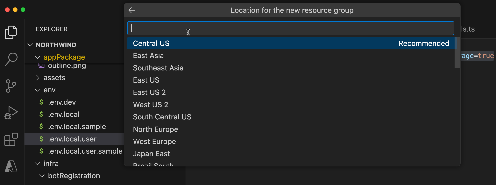

ラボ M4 - 認証の追加
このラボでは、前のラボで作成した Northwind プラグインに Entra ID SSO (シングル サインオン) 認証を追加し、Outlook のサプライヤー情報などの連絡先を検索できるように保護します。
Extend Teams メッセージ拡張ラボのナビゲーション (Extend Path)
注意
このラボでは、ボット サービスをプロビジョニングするための Azure サブスクリプションが必要です。
NOTE
すべてのコード変更を含む完成版は こちら からダウンロードできます。トラブルシューティングに便利です。
編集内容をリセットしたい場合は、リポジトリを再度クローンして最初からやり直してください。
このラボで学ぶこと:
- Entra ID シングル サインオン (SSO) をプラグインに追加し、ユーザーが Microsoft Teams と同じアカウントでシームレスにアプリへログインできるようにする方法
- Microsoft Graph API にアクセスし、Microsoft 365 内のユーザー データを取得する方法。本ラボでは Outlook の連絡先など、ログイン中のユーザーのコンテンツへ安全にアクセスします。
はじめに : SSO 実装に必要なタスク (概要)
プラグイン (メッセージ拡張アプリ) に SSO を実装するには、いくつかの手順が必要です。高レベルの流れは次のとおりです。
Microsoft Entra ID でアプリを登録し、Azure Bot Service でボットを構成する
- Azure ポータルで新しいアプリ登録を作成
- 必要なアクセス許可とスコープを構成
- クライアント シークレットを生成
- Azure Bot Service でボットを作成
- ボットに Microsoft 365 チャネルを追加
- Azure ポータルで OAuth 接続設定を構成
Teams アプリで SSO を有効化
- メッセージ拡張のボット コードを更新し、認証とトークン交換を処理
- Bot Framework SDK を使用して SSO 機能を統合
- OAuth フローを実装してユーザー トークンを取得
Teams で認証を構成
- Teams アプリ マニフェストに必要なアクセス許可を追加
エクササイズ 1: Microsoft Entra ID でアプリ登録 & Azure Bot Service でボット構成
幸い、必要な設定はすべて整えてあるので F5 を押すだけで準備完了です。ただし、リソースを登録・構成するためにプロジェクトで変更する箇所を確認しましょう。
手順 1: ファイルとフォルダーのコピー
ルート フォルダーの infra 内に entra フォルダーを作成します。
entra フォルダー内に entra.bot.manifest.json と entra.graph.manifest.json の 2 つのファイルを作成します。
以下のファイルからコードをコピーして entra.bot.manifest.json に貼り付け、同様に entra.graph.manifest.json もコピーします。
- entra.bot.manifest.json
- entra.graph.manifest.json
これらのファイルは、ボット用および Graph 用の Entra ID アプリ登録 (旧 Azure Active Directory アプリ登録) をプロビジョニングするために必要です。
次に infra フォルダーに azure.local.bicep ファイルを作成し、こちら からコードをコピーします。同じ infra フォルダーに azure.parameters.local.json ファイルを作成し、こちら からコードをコピーします。
これらのファイルはボット登録に役立ちます。この設定により、ローカル実行時でも Azure にボット サービスがプロビジョニングされ、今回の認証フローに必要となります。
これらのファイルで何が起きているのか?
Agents Toolkit がアプリをローカルで実行するとき、F0 SKU を使用した新しい Azure AI Bot Service がリソース グループにプロビジョニングされます。F0 SKU は標準チャネル (Microsoft Teams と Microsoft 365 チャネル: Outlook と Copilot) へ無制限でメッセージを送信でき、料金は発生しません。
手順 2: 既存コードの更新
infra/botRegistration フォルダー配下の azurebot.bicep を開き、param botAppDomain の宣言後に以下のコード スニペットを追加します。
param graphAadAppClientId string
@secure()
param graphAadAppClientSecret string
param connectionName string
次に同じファイルの末尾にボット サービスをプロビジョニングするスニペットを追加します。
resource botServicesMicrosoftGraphConnection 'Microsoft.BotService/botServices/connections@2022-09-15' = {
parent: botService
name: connectionName
location: 'global'
properties: {
serviceProviderDisplayName: 'Azure Active Directory v2'
serviceProviderId: '30dd229c-58e3-4a48-bdfd-91ec48eb906c'
clientId: graphAadAppClientId
clientSecret: graphAadAppClientSecret
scopes: 'email offline_access openid profile Contacts.Read'
parameters: [
{
key: 'tenantID'
value: 'common'
}
{
key: 'tokenExchangeUrl'
value: 'api://${botAppDomain}/botid-${botAadAppClientId}'
}
]
}
}
これにより、ボット サービスと Graph の Entra ID アプリ間でトークン交換を行う新しい OAuth 接続が作成されます。
プラグインのインフラ変更
これまでの非認証プラグインとは異なるインフラが必要になるため、再配線が必要です。次の手順で対応します。
次に teamsapp.local.yml を開き、内容を以下のコード スニペットで置き換えます。これによりインフラの一部が再配線され、このラボ用に Azure にボット サービスがデプロイされます。
# yaml-language-server: $schema=https://aka.ms/teams-toolkit/1.0.0/yaml.schema.json
# Visit https://aka.ms/teamsfx-v5.0-guide for details on this file
# Visit https://aka.ms/teamsfx-actions for details on actions
version: 1.0.0
provision:
- uses: script
name: Ensure database
with:
run: node db-setup.js
workingDirectory: scripts
# Creates a Teams app
- uses: teamsApp/create
with:
# Teams app name
name: NorthwindProducts-${{TEAMSFX_ENV}}
# Write the information of created resources into environment file for
# the specified environment variable(s).
writeToEnvironmentFile:
teamsAppId: TEAMS_APP_ID
- uses: aadApp/create
with:
name: ${{APP_INTERNAL_NAME}}-bot-${{TEAMSFX_ENV}}
generateClientSecret: true
signInAudience: AzureADMultipleOrgs
writeToEnvironmentFile:
clientId: BOT_ID
clientSecret: SECRET_BOT_PASSWORD
objectId: BOT_AAD_APP_OBJECT_ID
tenantId: BOT_AAD_APP_TENANT_ID
authority: BOT_AAD_APP_OAUTH_AUTHORITY
authorityHost: BOT_AAD_APP_OAUTH_AUTHORITY_HOST
- uses: aadApp/update
with:
manifestPath: "./infra/entra/entra.bot.manifest.json"
outputFilePath : "./build/entra.bot.manifest.${{TEAMSFX_ENV}}.json"
- uses: aadApp/create
with:
name: ${{APP_INTERNAL_NAME}}-graph-${{TEAMSFX_ENV}}
generateClientSecret: true
signInAudience: AzureADMultipleOrgs
writeToEnvironmentFile:
clientId: GRAPH_AAD_APP_ID
clientSecret: SECRET_GRAPH_AAD_APP_CLIENT_SECRET
objectId: GRAPH_AAD_APP_OBJECT_ID
tenantId: GRAPH_AAD_APP_TENANT_ID
authority: GRAPH_AAD_APP_OAUTH_AUTHORITY
authorityHost: GRAPH_AAD_APP_OAUTH_AUTHORITY_HOST
- uses: aadApp/update
with:
manifestPath: "./infra/entra/entra.graph.manifest.json"
outputFilePath : "./build/entra.graph.manifest.${{TEAMSFX_ENV}}.json"
- uses: arm/deploy
with:
subscriptionId: ${{AZURE_SUBSCRIPTION_ID}}
resourceGroupName: ${{AZURE_RESOURCE_GROUP_NAME}}
templates:
- path: ./infra/azure.local.bicep
parameters: ./infra/azure.parameters.local.json
deploymentName: Create-resources-for-${{APP_INTERNAL_NAME}}-${{TEAMSFX_ENV}}
bicepCliVersion: v0.9.1
# Validate using manifest schema
- uses: teamsApp/validateManifest
with:
# Path to manifest template
manifestPath: ./appPackage/manifest.json
# Build Teams app package with latest env value
- uses: teamsApp/zipAppPackage
with:
# Path to manifest template
manifestPath: ./appPackage/manifest.json
outputZipPath: ./appPackage/build/appPackage.${{TEAMSFX_ENV}}.zip
outputJsonPath: ./appPackage/build/manifest.${{TEAMSFX_ENV}}.json
# Validate app package using validation rules
- uses: teamsApp/validateAppPackage
with:
# Relative path to this file. This is the path for built zip file.
appPackagePath: ./appPackage/build/appPackage.${{TEAMSFX_ENV}}.zip
# Apply the Teams app manifest to an existing Teams app in
# Teams Developer Portal.
# Will use the app id in manifest file to determine which Teams app to update.
- uses: teamsApp/update
with:
# Relative path to this file. This is the path for built zip file.
appPackagePath: ./appPackage/build/appPackage.${{TEAMSFX_ENV}}.zip
# Extend your Teams app to Outlook and the Microsoft 365 app
- uses: teamsApp/extendToM365
with:
# Relative path to the build app package.
appPackagePath: ./appPackage/build/appPackage.${{TEAMSFX_ENV}}.zip
# Write the information of created resources into environment file for
# the specified environment variable(s).
writeToEnvironmentFile:
titleId: M365_TITLE_ID
appId: M365_APP_ID
deploy:
# Run npm command
- uses: cli/runNpmCommand
name: install dependencies
with:
args: install --no-audit
# Generate runtime environment variables
- uses: file/createOrUpdateEnvironmentFile
with:
target: ./.localConfigs
envs:
BOT_ID: ${{BOT_ID}}
BOT_PASSWORD: ${{SECRET_BOT_PASSWORD}}
STORAGE_ACCOUNT_CONNECTION_STRING: ${{SECRET_STORAGE_ACCOUNT_CONNECTION_STRING}}
CONNECTION_NAME: ${{CONNECTION_NAME}}
env フォルダー配下の .env.local を開き、変数をすべて削除して以下の内容に置き換えます。
APP_INTERNAL_NAME=Northwind
APP_DISPLAY_NAME=Northwind
CONNECTION_NAME=MicrosoftGraph
同じく .env.local.user を開き、すべて削除して以下を追加します。
SECRET_BOT_PASSWORD=
SECRET_GRAPH_AAD_APP_CLIENT_SECRET=
SECRET_STORAGE_ACCOUNT_CONNECTION_STRING=UseDevelopmentStorage=true
エクササイズ 2: 連絡先検索用の新しい検索コマンド
手順 1: 連絡先 (サプライヤー) を検索するコマンドを追加
まず、連絡先を検索する新しいコマンドを追加します。最終的には Microsoft Graph から連絡先を取得しますが、まずはモック データを使用してメッセージ拡張コマンドが正しく動作するか確認します。
src フォルダー > messageExtensions に移動し、新しいファイル supplierContactSearchCommand.ts を作成します。
以下の内容を新しいファイルにコピーします。
import {
CardFactory,
TurnContext
} from "botbuilder";
const COMMAND_ID = "supplierContactSearch";
let queryCount = 0;
async function handleTeamsMessagingExtensionQuery(context: TurnContext, query: any): Promise<any> {
let name = '';
if (query.parameters.length === 1 && query.parameters[0]?.name === "name") {
[name] = (query.parameters[0]?.value.split(','));
} else {
name = cleanupParam(query.parameters.find((element) => element.name === "name")?.value);
}
console.log(`🍽️ Query #${++queryCount}:\name of contact=${name}`);
const filteredProfile = [];
const attachments = [];
const allContacts = [
{
displayName: "John Doe",
emailAddresses: [
{ address: "john.doe@example.com" }
]
},
{
displayName: "Jane Smith",
emailAddresses: [
{ address: "jane.smith@example.com" }
]
},
{
displayName: "Alice Johnson",
emailAddresses: [
{ address: "alice.johnson@example.com" }
]
}
];
allContacts.forEach((contact) => {
if (contact.displayName.toLowerCase().includes(name.toLowerCase()) || contact.emailAddresses[0]?.address.toLowerCase().includes(name.toLowerCase())) {
filteredProfile.push(contact);
}
});
filteredProfile.forEach((prof) => {
const preview = CardFactory.heroCard(prof.displayName,
`with email ${prof.emailAddresses[0]?.address}`);
const resultCard = CardFactory.heroCard(prof.displayName,
`with email ${prof.emailAddresses[0]?.address}`);
const attachment = { ...resultCard, preview };
attachments.push(attachment);
});
return {
composeExtension: {
type: "result",
attachmentLayout: "list",
attachments: attachments,
},
};
}
function cleanupParam(value: string): string {
if (!value) {
return "";
} else {
let result = value.trim();
result = result.split(',')[0]; // Remove extra data
result = result.replace("*", ""); // Remove wildcard characters from Copilot
return result;
}
}
export default { COMMAND_ID, handleTeamsMessagingExtensionQuery }
src/searchApp.ts を開き、新しく作成したコマンドをインポートします。
import supplierContactSearchCommand from "./messageExtensions/supplierContactSearchCommand";
そして handleTeamsMessagingExtensionQuery 内の case customerSearchCommand.COMMAND_ID: の後に新しいケースを追加します。
case supplierContactSearchCommand.COMMAND_ID: {
return supplierContactSearchCommand.handleTeamsMessagingExtensionQuery(context, query);
}
次に appPackage/manifest.json を開き、composeExtensions ノードの commands 配列にコマンドを追加します。
{
"id": "supplierContactSearch",
"context": [
"compose",
"commandBox"
],
"description": "Search for a contact in the user's Outlook contacts list for Northwind",
"title": "Contact search",
"type": "query",
"parameters": [
{
"name": "name",
"title": "Contact search",
"description": "Type name of the contact or company which forms the domain for email address of the contact, to search my Outlook contacts list",
"inputType": "text"
}
]
}
これで、モック データを使用した非認証の連絡先検索コマンドが追加されました。
手順 2: Agents Toolkit で Azure にサインイン
Agents Toolkit では、リソースをプロビジョニングする前に Azure アカウントへのサインインとサブスクリプションが必要です。その後、Azure にアプリをホストするためのリソースを使用します。
プロジェクト エディターのアクティビティ バーで Microsoft Teams アイコン 1️⃣ を選択し、Agents Toolkit 拡張パネルを開きます。
Agents Toolkit パネルの Accounts で "Sign in to Azure" 2️⃣ を選択します。

表示されるダイアログで "Sign in" を選択します。

手順 3: Teams でアプリを実行して新しいコマンドをテスト
新しいコマンドをテストするには、アプリをローカルで実行する必要があります。
F5 キーを押すか、開始ボタン 1️⃣ をクリックしてデバッグを開始します。デバッグ プロファイルの選択を求められたら、Debug in Teams (Edge) 2️⃣ を選択 (または別のプロファイルを選択) します。

このラボでの F5
F5 キーを押してアプリを実行すると、Exercise 1 で構成したとおり認証フローに必要なリソースもすべてプロビジョニングされます。
環境変数をクリアしたため、すべての Entra ID アプリとボット サービスが Azure にインストールされます。初回実行時には、Agents Toolkit でサインインした Azure サブスクリプション内のリソース グループを選択する必要があります。

整理しやすいように + New resource group を選択し、Agents Toolkit が提案したデフォルト名をそのまま使用して Enter を押します。
次に Location を選択します。今回のラボでは Central US を選択します。

その後、Agents Toolkit がリソースをプロビジョニングしますが、実行前に確認が求められます。

Provision を選択します。
リソースがプロビジョニングされたら、ブラウザーで Northwind アプリのインストール ダイアログが表示されます。Add を選択します。

インストール後、アプリを開くダイアログが表示されます。個人チャットのメッセージ拡張としてアプリを開くため、Open を選択します。

今回はコマンドが動作するかだけを確認するため、Teams チャットでのみテストします。
アプリとの個人チャットで Contact search を選択し、a と入力します。

上図のように連絡先が一覧表示されれば、モック データながらコマンドは正常に動作しています。次のエクササイズで修正します。
エクササイズ 3 : 新しいコマンドに認証を有効化
前のステップで新しいコマンドの基礎を作成しました。次に認証を追加し、モック連絡先リストを実際の Outlook 連絡先に置き換えます。
まず、プラグインに必要な npm パッケージをインストールします。プロジェクトで新しいターミナルを開きます。
ターミナルで以下のスクリプトを実行します:
npm i @microsoft/microsoft-graph-client @microsoft/microsoft-graph-types
src/config.ts を開き、storageAccountConnectionString: process.env.STORAGE_ACCOUNT_CONNECTION_STRING の後ろに , を追加し、connectionName のプロパティと値を以下のように追加します。
const config = {
botId: process.env.BOT_ID,
botPassword: process.env.BOT_PASSWORD,
storageAccountConnectionString: process.env.STORAGE_ACCOUNT_CONNECTION_STRING,
connectionName: process.env.CONNECTION_NAME
};
次に src フォルダーに services フォルダーを作成します。
その中に AuthService.ts と GraphService.ts の 2 ファイルを作成します。
- AuthService : 認証サービスを提供するクラスで、getSignInLink メソッドは接続情報を使ってサインイン URL を取得し返します。
- GraphService : Microsoft Graph API と対話するクラスで、トークンを用いて Graph クライアントを初期化し、
getContactsメソッドでユーザーの連絡先 (displayName と emailAddresses) を取得します。
AuthService.ts に以下のコードをコピーします。
import {
AdaptiveCardInvokeResponse,
CloudAdapter,
MessagingExtensionQuery,
MessagingExtensionResponse,
TurnContext,
} from 'botbuilder';
import { UserTokenClient } from 'botframework-connector';
import { Activity } from 'botframework-schema';
import config from '../config';
export class AuthService {
private client: UserTokenClient;
private activity: Activity;
private connectionName: string;
constructor(context: TurnContext) {
const adapter = context.adapter as CloudAdapter;
this.client = context.turnState.get<UserTokenClient>(
adapter.UserTokenClientKey
);
this.activity = context.activity;
this.connectionName = config.connectionName;
}
async getUserToken(
query?: MessagingExtensionQuery
): Promise<string | undefined> {
const magicCode =
query?.state && Number.isInteger(Number(query.state)) ? query.state : '';
const tokenResponse = await this.client.getUserToken(
this.activity.from.id,
this.connectionName,
this.activity.channelId,
magicCode
);
return tokenResponse?.token;
}
async getSignInComposeExtension(): Promise<MessagingExtensionResponse> {
const signInLink = await this.getSignInLink();
return {
composeExtension: {
type: 'auth',
suggestedActions: {
actions: [
{
type: 'openUrl',
value: signInLink,
title: 'SignIn',
},
],
},
},
};
}
async getSignInAdaptiveCardInvokeResponse(): Promise<AdaptiveCardInvokeResponse> {
const signInLink = await this.getSignInLink();
return {
statusCode: 401,
type: 'application/vnd.microsoft.card.signin',
value: {
signinurl: signInLink,
},
};
}
async getSignInLink(): Promise<string> {
const { signInLink } = await this.client.getSignInResource(
this.connectionName,
this.activity,
''
);
return signInLink;
}
}
GraphService.ts に以下のコードをコピーします。
import { Client } from '@microsoft/microsoft-graph-client';
export class GraphService {
private _token: string;
private graphClient: Client;
constructor(token: string) {
if (!token || !token.trim()) {
throw new Error('SimpleGraphClient: Invalid token received.');
}
this._token = token;
this.graphClient = Client.init({
authProvider: done => {
done(null, this._token);
},
});
}
async getContacts(): Promise<any> {
const response = await this.graphClient
.api(`me/contacts`)
.select('displayName,emailAddresses')
.get();
return response.value;
}
}
次に supplierContactSearchCommand.ts に戻り、追加した 2 つのサービスをインポートします。
import { AuthService } from "../services/AuthService";
import { GraphService } from "../services/GraphService";
続いて、認証を初期化しユーザー トークンを取得、その有効性を確認して問題なければ Microsoft Graph API とやり取りするサービスをセットアップします。トークンが無効な場合はサインインを促します。
handleTeamsMessagingExtensionQuery 関数内の allContacts 定義のモックより上に以下のコードをコピーします。
const credentials = new AuthService(context);
const token = await credentials.getUserToken(query);
if (!token) {
return credentials.getSignInComposeExtension();
}
const graphService = new GraphService(token);
次に allContacts のモック定義を以下のコードに置き換えます:
const allContacts = await graphService.getContacts();
続いて appPackage/manifest.json を開き、validDomains ノードを以下のように更新します。
"validDomains": [
"token.botframework.com",
"${{BOT_DOMAIN}}"
]
さらに validDomains 配列の後ろに , を追加し、webApplicationInfo ノードを以下の値で追加します。
"webApplicationInfo": {
"id": "${{BOT_ID}}",
"resource": "api://${{BOT_DOMAIN}}/botid-${{BOT_ID}}"
},
最後にマニフェストのバージョンを "1.0.10" から "1.0.11" に更新し、変更を反映します。
これらのマニフェスト変更によって、サインイン URL が正しく生成・送信され、ユーザーが同意できるようになります。
エクササイズ 4: 認証をテスト
手順 1: アプリをローカルで実行
ローカル デバッガーが動作中の場合は停止します。マニフェストを更新したため、新しいパッケージでアプリを再インストールします。
F5 キーを押すか開始ボタン 1️⃣ をクリックしてデバッグを再開します。デバッグ プロファイルの選択を求められたら、Debug in Teams (Edge) 2️⃣ を選択します。
Provision
ここでもリソースをプロビジョニングするか確認するダイアログが表示されます。"Provision" を選択してください。これは新規リソースの作成ではなく、既存リソースの上書きです。
デバッグによりブラウザーで Teams が開きます。Agents Toolkit にサインインしたものと同じ資格情報でログインしてください。
Teams が開いたら、アプリケーションを開くダイアログが表示されます。

開く場所を聞かれます。既定では個人チャットです。チャネルやグループ チャットも選択できますが、Open をクリックします。

現在、アプリとの個人チャットにいます。ただし Copilot でテストするため、次の手順に従います。
Teams で Chat をクリックし、Copilot を選択します (最上部にあります)。
Plugin アイコン をクリックし、Northwind Inventory を選択してプラグインを有効化します。
手順 2 : テスト データの入力
プラグインが実際の連絡先を取得できるようにするには、まず Microsoft 365 に連絡先を追加しておく必要があります。
1️⃣ Microsoft Teams で「ワッフル」メニューをクリック
2️⃣ Microsoft Outlook を選択

1️⃣ Outlook で「Contacts」ボタンをクリック
2️⃣ 新しい連絡先を入力
アプリは名前とメール アドレスのみを表示します。ビジネス シナリオに合わせたい場合は、サプライヤーらしい名前にしてみてください。

手順 2: Copilot でテスト
Copilot に次のプロンプトを入力して連絡先を検索します:
Find my contacts with name {first name} in Northwind
({first name} を Exercise 4, Step 1 で追加した連絡先の名前に置き換えてください)
以下のようにサインイン ボタンが表示され、一度だけ認証を求められます。

これは、この機能を呼び出すために認証が必要なことを示しています。Sign in to Northwind Inventory を選択します。
次に同意を求めるダイアログが表示されます (下の GIF)。同意すると Microsoft 365 Copilot から結果が返されます。

おめでとうございます
難易度の高い課題でしたが、見事クリアしました!
Message Extension エージェント コースにご参加いただき、ありがとうございました!